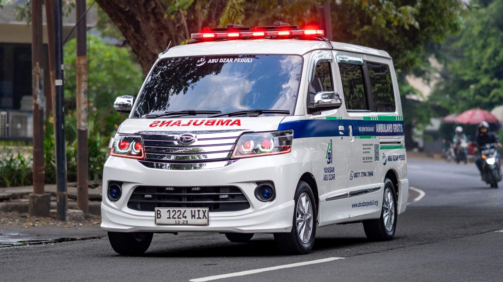
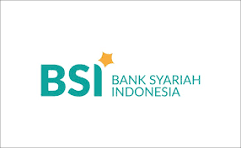
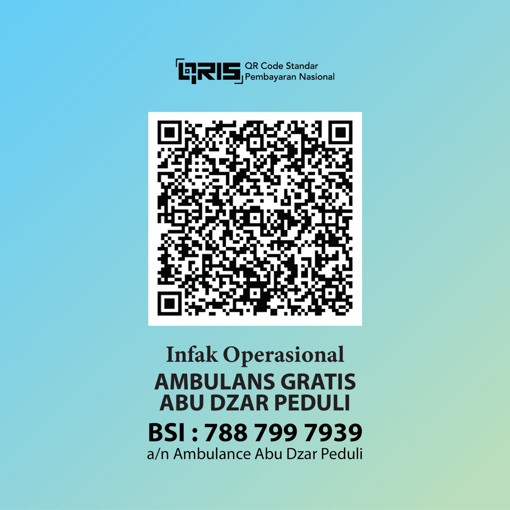

LAYANAN AMBULANS GRATIS
Mengantar
dengan hati.
Melayani
tanpa biaya.
Dalam perjalanan menuju sehat, tak seorang pun seharusnya merasa sendiri. Kami hadir untuk membantu meringankan langkah Anda dan keluarga.
Digerakkan oleh kepedulian.
Dihadirkan untuk kemanusiaan.

Tanpa biaya.
01 / TENTANG KAMI
Perjalanan mereka.
Kepedulian kita.
Ambulans Abu Dzar hadir untuk membantu masyarakat yang membutuhkan layanan transportasi ambulans dengan semangat kepedulian untuk saling membantu sesama.
Kami percaya bahwa kepedulian bisa hadir dalam hal yang sederhana: menemani, mengantar, dan memastikan sebuah keluarga tidak menghadapi perjalanan sulitnya sendirian.
02 / DOKUMENTASI KEGIATAN
Jejak kecil,
arti yang besar.
Dokumentasi perjalanan pasien, perawatan armada, dan sinergitas relawan.
03 / BERBAGI KEBAIKAN
Bantu roda kebaikan
terus bergerak.
Setiap dukungan dari anda sangat berarti untuk perjalanan berikutnya. Mari kita bersama sama saling membantu, agar kami dapat membantu lebih banyak keluarga untuk mengakses layanan ambulans gratis abu dzar.
Mulai dari niat baik.

Donasi melalui QRIS
Pindai melalui mobile banking atau dompet digital.

QRIS belum tersedia. Anda dapat transfer ke rekening di atas.
04 / HUBUNGI KAMI
Kami siap
mendengarkan.
Butuh informasi layanan atau ingin ikut membantu? Mulai percakapan dengan kami.
Mari terhubung
Hubungi kontak resmi Admin kami untuk menanyakan ketersediaan armada dan mengonfirmasi penjemputan.
Sebelum menghubungi kami
Tentukan titik lokasi
Sampaikan titik penjemputan dan alamat tujuan.
Jelaskan kebutuhan Anda
Jelaskan waktu perjalanan dan kebutuhan pendampingan.
Konfirmasi melalui Admin kami
Pastikan ketersediaan dan kesiapan armada sebelum berangkat.
TEMUKAN KAMI
Dekat untuk
membantu.
Ambulans Gratis Abu Dzar Peduli
Lihat titik lokasi dan rute perjalanan melalui Google Maps.
Buka Google Maps